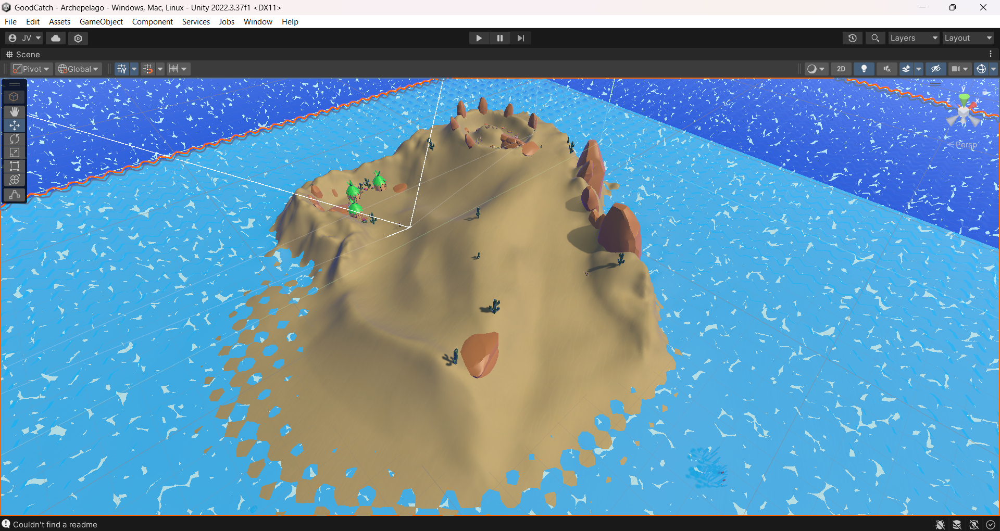

- - - Synopsis - - -
You wake up marooned on a desert island, with nought but the endless waves to keep you company out here. The Leviathan ravaged your ship, leaving you its sole survivor, marooned in the middle of nowhere with but a makeshift fishing rod and your own wits. But alone, you're not; inhabiting these isles is a diverse ecosystem of strange aquatic magical lifeforms, each alone a weapon in their own right. Perhaps they may be the key to escaping this wreck and defeating that abominable giant; but you won't be going anywhere until you can fix that ship of yours.
Welcome to fishing season, Captain.
- - - About the Game - - -
Good Catch! is what happens when you decide to run Pokémon through a fishing minigame: a creature collector in which every party member is reeled in from a body of water from the outside. Development began in late 2024 as part of a (currently ongoing) Game Design Workshop class, but is likely to continue for the foreseeable future as a full indie release.
- - - Highlighted Work - - -
Desert Island Topology
Screenshots (in iso and perspective) of the starting desert island for which I created the basic terrain geometry. This island was envisioned as a smaller location characterized by a grand ascent up a small mountain/mesa, at the center of which was a small oasis. Incredibly, it actually shrank no less than three times during development, as the initial trip ended up overshooting our target of one minute despite our modifications.
A closeup of one of the dunes. It took many passthroughs and much fiddling around with the terrain tools in order to get this working; I eventually figured out how to exploit the Thermal erosion tool to smooth out unwanted bumps, and the Wind tool to carve the terrain into these jagged dune patterns. The texture is not my work, however.
Party UI Layout
The layout for the party screen UI was my other major contribution to the project, as was the implementation of the other team members' art assets in-engine. The layout was created very early in the game's development and thus far, has not changed its basic structure, though like all things it can potentially change by the project's completion. The staggered seven-member layout was my own invention, to help distinguish the game from a certain other creature collector with a cutesy aesthetic.
The same party UI, updated with art assets provided by another team member (Logan, I believe).